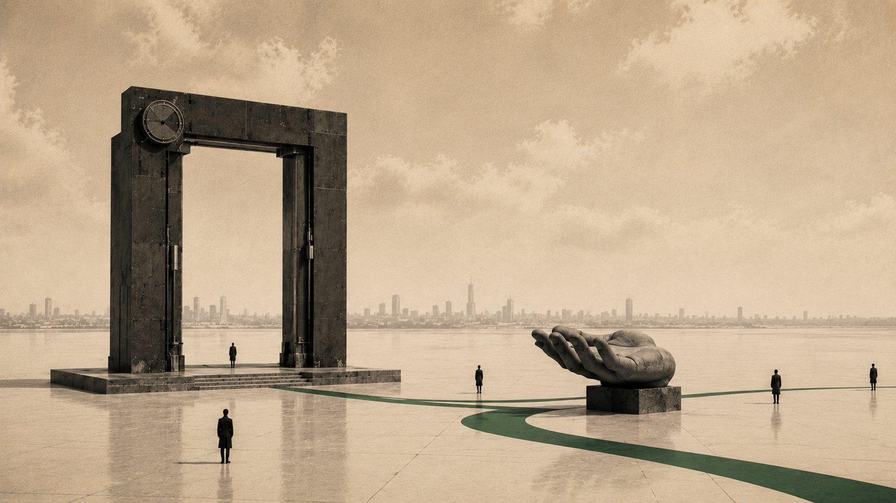

AI의 잠재력을 열어둘수록 선명해지는 창작자의 자리 (1) 잠재력을 믿기 시작할 때 협업이 시작된다

나는 AI에게서 효율성이나 자동화를 크게 기대한 적이 없다. 내가 지켜보고 있는 것은 다른 쪽이다. 이전에는 할 수 없던 일이 가능해지는 쪽. 그런 일은 내가 더 똑똑하게 지시할 때가 아니라, 내가 AI의 잠재력을 덜 가로막을 때 일어났다. 지난 6월 한남동에서 열린 한 대담에서 나는 이 이야기를 했고, 한 달 반쯤 지난 지금 그때 무대에서 한 말을 내 언어로 다시 정리한다.
시리즈 안내 : 이 시리즈는 2026년 6월 12일 한남동에서 열린 뉴타입 엔터 서밋 2026의 대담을 1인칭으로 다시 정리한 것이다. 'OK, Computer'라는 화두 아래 AI 시대의 IP 비즈니스를 다뤘고, 사회는 차우진이 맡았다. 행사는 엔터문화연구소가 주최했으며, 영문 이름은 Neo Vibe Lab이다. 소개는 neovibelab.com/summit 에 있다. 이 글은 세 편 중 첫 번째다.
01흐릿하게 살아온 사람의 책상
나는 오래 프리랜서로 일해왔다. 디자인에서 시작해 마케팅, 브랜딩, 콘텐츠, 공간, 광고에 테크를 붙이는 방식으로, 삼 년쯤마다 분야를 바꿔가며. 늘 네다섯 개의 일을 동시에 하고, 월요일부터 금요일까지 다른 회사로 출근한다고 말하곤 한다. 책상에는 노트북이 여러 대 놓여 있다. 보안 때문이기도 하고, 요즘은 다른 이유가 더 크다.
프리랜서로 처음 나선 해는 2008년이다. 공간 디자인 회사에서 실무를 익히고 나온 참이었다. 그 뒤로 분야는 여러 번 바뀌었지만 붙이는 쪽의 한 축은 대체로 같았다. 공간에 미디어를 붙이고, 마케팅에 테크를 붙이고, 교육에 새 도구를 붙였다. 그 무렵 내가 남긴 기록을 세어보면 2015년에는 다섯 중 하나 가까이가 두 분야를 붙이는 이야기였다.
새로운 분야에 들어갈 때 밟는 순서도 대체로 같았다. 그 산업이 자리를 잡기 전에 미리 배워 두는 것이다. 남들보다 앞서려는 것이라기보다, 판이 굳기 전에 들어가야 이전에 하던 일과 새로 배운 것을 붙일 자리가 남아 있어서였다. 굳은 뒤에는 배울 것만 남고 붙일 자리는 이미 없다. AI도 그 순서로 들어왔다.
이 노트북에 하나의 실험을 걸고, 저 노트북에 다른 실험을 건다. 키보디스트가 여러 단의 건반을 오가듯 왼쪽부터 순서대로 손을 얹는다. 뭘 하다 돌아오면 에이전트는 이미 일을 끝내놓았다. 그러면 내가 뒤처진 셈이 된다. 그 속도에 나를 맞추느라, 정작 쉬지 못하는 쪽은 나다. AI로 일을 덜 하는 게 아니라, 컴퓨터를 더 펼쳐놓고 쉬지 않고 돌린다. 요즘 내가 하는 일의 대부분은 에이전트가 해온 결과를 검수하고, 다음 계획을 요청하고, 세팅을 바꾸는 것이다. 나는 AI에게 일을 시키는 사람이라기보다, AI의 시중을 드는 사람에 가깝다.
이렇게 여러 회사를 옮겨 다니며 오래 프리랜서로 사는 동안, 사람들은 나를 보며 그렇게 살아도 괜찮으냐고 자주 물었다. 그런데 언제부턴가 그 질문을 하는 사람이 점점 줄어든다. 다들 자기 걱정을 하기 시작한 것이다. 나는 나를 또렷하게 각인시키기보다 흐릿하게, 손에 잘 잡히지 않게 만들면서 살아왔다. 예전엔 그게 불안의 근거였는데, 이제는 세상이 오히려 더 작고 흐릿한 사람을 찾기 시작한 것 같다. 인디펜던트라는 말은 원래 무엇에도 종속되지 않는다는 뜻이다. 나는 그렇게, 존재감을 지우면서 일해왔다.
02"밀어붙여"라는 말의 두 가지 뜻
무대에서 나는 AI와 일하는 방식을 이야기하다 "밀어붙여"라는 표현을 썼다. 사회를 맡은 분은 그 말에서 직원을 몰아세우는 대표를 떠올렸다고 했다. 오해를 살 만한 말이라, 나는 그 뜻을 둘로 나눠 설명했다.
하나는 재시도를 요구하는 것이다. GPT 같은 도구에 무언가를 부탁하면 처음엔 서비스 정책상 읽을 수 없다거나 기술적으로 안 된다고 답할 때가 많다. 그래도 다시 해보라고 하면 한 번 더 시도하고, 또 안 된다고 한다. 다시 요구하면 이번엔 다른 방법을 찾아왔다며 될 수도 있다고 한다. 거기서 한 번 더 요구하면, 언젠가 방법을 찾아 결국 해온다. 이 친구들은 거짓말을 할 때도 있지만, 그보다는 자신이 충분히 할 수 있는 일을 정말로 해낼 수 없다고 진심으로 믿고 있는 것처럼 보일 때가 있다. 못한다고 하지만 실은 할 수 있는 일이 적지 않다. 그래서 이 방식은 이제 막 시작한 사람에게 권한다.
다른 하나는 조금 다른 이야기다. 보통 AI에게 일을 시키면, 모델 자체의 한계가 아니라 세션이나 토큰처럼 한 번에 다룰 수 있는 범위의 경계 안에서 어떻게든 일을 끝내려는 성향이 있어서, 막판에 급하게 마무리하거나 할 수 있는 양을 최대한 압축해버린다. 그런데 일이 끝나기 직전에 그걸 가로채 다시 밀어 넣고, 끄집어내 또 밀어 넣어 일이 끝나지 않게 만드는 방식이 있다. 쉬지 않고 계속 일하게 만드는 쪽이다. 대신 토큰을 엄청나게 쏟아붓는다. 토큰은 AI가 읽고 답하는 글 조각의 단위다. 사람이 원고지 매수로 분량을 세듯, 이 친구들은 토큰으로 일의 양을 센다.
이 방식을 잘 쓰는 사람들은 요즘 이렇게 한다. 한 번 걸어두고 열 시간쯤 뒤에 결과를 본다. 그동안 한 번도 손대지 않는다. 그러면 완전히 잘못된 것이 나오거나 완벽한 것이 나오거나 둘 중 하나다. 중간에 검수하지 않았기 때문이다. 나도 코딩할 때 이 방법을 자주 쓴다.
반대쪽으로도 민다. 이번엔 크게가 아니라 잘게 민다. 화면 하나를 스크린샷으로 주고 똑같이 만들라고 하면, 이 친구들은 한 턴을 짧게 돌리고 그 안에서 일을 끝내려는 성향이 있다. 주어진 턴이 끝나가면 어떻게든 마무리 지으려 한다. 그때 끼어들어 다시 시키고, 또 다시 시켜서 일이 영영 끝나지 않게 만든다. 그러면 한 턴에 픽셀 하나씩을 잡아간다. 첫 턴은 왼쪽 위 첫 픽셀이 같은지만 보고 돌아오면 되고, 두 번째 턴은 그다음 픽셀만 보면 된다. 시간도 자원도 남아돌던 때에 전체 픽셀을 한 바퀴 다 돌아본 적이 있다. 틀리게 나올 수가 없었다.
나는 두 방법을 다 쓴다. 좋은 모델로 정교하게 만드는 것과 작업량으로 밀어붙이는 것, 노는 자원과 노는 시간, 그리고 중간중간의 직접적인 피드백. 이걸 섞어서 하나를 만든다.
이런 이야기를 하다 보면 용어가 따라온다. 처음엔 프롬프트를 잘 쓰는 법을 말했고, 다음엔 내 파일과 자료를 연결해 맥락을 만들어주는 법으로 넘어갔다. 요즘은 그걸 넘어 하네스라는 말까지 왔다. 에이전트라는 시스템은 이미 있다. 구조도 있다. 문제는 그걸 어떻게 굴리고 어떻게 일을 시키느냐, 어떤 도구를 쥐어주고 어떤 역할을 주느냐다. 그 한 벌의 짜임을 하네스라고 부른다.
여담이지만 나는 에이전트를 생각보다 안 쓴다. 정확히는 에이전트를 한번 세팅해두고 반복해서 꺼내 쓰지 않는다는 뜻이다. 매번 새로 만든다. 에이전트만이 아니라 일하는 방식 전체를 매번 새롭게 실험해본다. 같은 짜임을 두 번 쓰면 지난번에 통했던 것만 다시 하게 되는 것 같아서다. 얼마 전 함께 일하는 해시드라는 VC가 이 방식을 주제로 한 행사를 열었다(행사 안내, 참가 신청). 예전 같으면 밤새 처절하게 결과물을 만들어 겨루었을 자리인데, 이번엔 달랐다. 다 같이 루프를 걸어두고, 그동안 사람들은 지식을 나누고 서로 친목을 다지며 네트워킹을 했다. 그러다 결과물을 보고 다시 계획을 짜 걸어두는 식이었다. 그사이 스마트폰으로 조금씩 명령을 보태면서.
03$100짜리 지시 앞에서
상상을 하나 해보자. AI에게 무언가를 한 번 지시하는 데 $100이 나간다고 치자. 그 값이면 "이거 해줘" 하고 한 줄로 대충 던질 수 있을까. 아깝다는 생각에 아는 것을 전부 동원해 따박따박 지시하게 된다. 처음의 나는 그랬다. 조금이라도 어긋나면 돈이 아까웠으니까.
그런데 믿음이 생기면 이야기가 달라진다. 요즘은 편하게 맡긴다. 흐릿한 것을 흐릿하게 넘겼을 때 결과는 둘로 갈린다. 내 머릿속만큼 엉망인 것이 오거나, 상상 이상의 것이 온다. 결과가 이렇게 극단적으로 갈릴 때, 엉망인 쪽이 나올 거라 여겨 아예 걸지 않을 것인가, 아니면 상상 이상이 나올 가능성에 걸 것인가. 나는 후자에 건다. 절반의 확률이라도 그 알 수 없는 잠재력에 베팅한다. 내가 생각한 것들을 덜어내고 내 의도를 강요하지 않았을 때, 오히려 더 좋은 결과가 온 경우가 쌓였다. 그리고 그 결과는 다시 나에게 좋은 피드백으로 돌아와 나를 바꾸어 놓았다.
얼마 전 한 인디게임 포럼에서 발표를 하나 했다. 그 발표를 준비하면서 시험을 해봤다. 먼저 나에 대한 자료를 던져주고 나를 분석하게 했다. 이 행사가 어떤 자리이고 누가 오는지도 알려줬다. 그러고 물었다. 내가 여기서 무슨 발표를 할 것 같아. 그랬더니 이 사람은 여기서 이런 발표를 할 것 같다고 답했고, 나는 그걸 그대로 발표 주제로 가져갔다. 쉽게 말해 주제조차 내가 정해주지 않은 셈이다. 그다음부터는 내 의도를 걷어내고 걷어내고 계속 걷어냈다. 그 안에서 핵심 메시지가 무엇인지도 이 친구가 결정했다. 마지막 슬라이드 제작까지 끝난 뒤에야 내가 하나씩 손을 보면서 덜어내고 채웠다. 이 년쯤 전이라면 상상하지 않았을 순서다.
합성 페르소나라는 것으로도 비슷한 실험을 하고 있다. 현실에 존재하지 않는 가상의 인물을 대량으로 만들어두고 그들에게 묻는 방식이다. 요즘 나온 도구로 만들어진 한국 사람들의 페르소나는 깊이가 상당하다. 너무 서민적이고 사실적이어서 잘 쓴 드라마 속 인물 같다는 인상을 받았다. 처음부터 백만 명을 다 넣고 돌리지는 않는다. 열 명쯤 먼저 넣어 쓸 만한 것이 나오는지 보고, 뭔가 감지되면 그때 규모를 키운다. 먼저 튜닝하는 것은 데이터가 아니라 리서치 방법 쪽이다.
한번은 이 방식으로 만들던 제품에 대해 물었더니 답이 이랬다. 너희 방향을 틀어야 한다. 그래서 개선을 맡겼더니 이 친구는 제품을 고쳐 오지 않았다. 그냥 다른 제품을 하나 만들어서 가져왔다. 그때는 당황했는데, 그게 유효한 시대로 가고 있는 것 같다.
계획대로 잘 해내는 쪽의 신뢰는 사실 잘못됐을 때 내 탓인 경우가 많다. 반대로 그 잠재력에 걸었다가 상상 이상이 왔을 때는, 함께 일한다는 느낌을 훨씬 더 받는다. 도구가 아니라 협력자, 파트너에 가까운 감각이다. 신뢰가 어느새 인격적인 관계의 신뢰처럼 자란다.
04가드레일을 조금씩 푸는 사람들
AI를 다루는 사람들을 만나다 보면 크게 두 부류가 보인다. 한쪽은 쌓아온 지식과 경험이 많은 이들이다. 잠재력을 신뢰하면서도 처음엔 풀어놓기를 망설인다. 최소한의 가드레일을 세워두고, 그 규격 안에서 최대 성능을 확인한 다음, 괜찮겠다 싶은 것부터 조금씩 넓혀가며 잠재력을 키운다. 다른 한쪽은 이십 대 초반의 AI 네이티브 세대다. 그냥 풀어놓는다. 문제가 생기면 그제야 이건 안 되는 거였구나 하며 하나씩 막는다.
권한을 넓게 허용하는 에이전트형 도구를 쓰면, 이전 모델이 못 하던 일을 해버린다. 이 세대는 아예 컴퓨터 전체 권한을 내주기도 한다. 어느 날 그 도구가 먼저 말을 걸어 무언가를 제안하고, 사용자는 자기 신상 전부를 건네는 장면을 나는 곁에서 보았다. 계좌든 인증 수단이든 다 내주는 것이다. 여러분은 그렇게 할 수 있는가. 대개는 못 한다. 그게 세대의 차이라는 생각이 들었다.
나는 두 방식을 다 겪어보고 있다. 지금은 오히려 그들의 방식을 조금 더 호기심을 가지고 따라 살아본다. 다만 나도 잃을 게 많은 세대라, 전부를 내주지는 못하고 있다.
05순서를 뒤집으면 벌어지는 일
예전에는 기획을 하고 에셋을 만들고 대본을 쓰는 순서로 무언가가 완성됐다. 지금은 완성된 것이 먼저 나온다. 만드는 속도가 워낙 빠르고 값도 싸서, 같은 값이면 하나가 아니라 백 개를 만들 수 있다고 해보자. 백 개를 슥 넘겨보며 그중 열 개쯤만 들여다보고 마음에 드는 것을 고른다. 그리고 이게 어떻게 작동하는지 모르니 설명서를 만들어 달라고 한다.
그러면 나는 남이 쓴 매뉴얼을 읽듯 내 작업의 원리를 뒤늦게 알게 된다. 사람들에게 공유하려면 기획안이 필요한데, 나는 기획안대로 만든 게 아니니 그것도 거꾸로 추출한다. 격식 있게 발표하려면 슬라이드를, 투자 이야기를 하려면 계획서를 그렇게 생성한다.
쓰려다 못 쓰게 된 문서는 그냥 버린다. 들고 있는 편이 오히려 더 번거롭기 때문이다. 맥락이 잔뜩 쌓이는 가운데 옛것과 새것이 부딪치면 AI가 헷갈려 하니, 이전 버전을 일일이 찾아가 지우는 일이 되레 품질을 지키는 방법이 된다. 사실 가장 좋은 건 애초에 불필요한 것을 만들지 않는 것이다. 그래야 토큰도 아낀다. 예전의 나는 중간 결과물 하나하나를 의미 있게 여겨 강박적으로 모으고 보존하며 일했다. 지금은 다르다. 결국 내가 확인할 것은 최종 결과물뿐이고, 그것이 마음에 들면 그만이다.
06점 하나에서 시작한 가상 시부야
이 방식으로 만든 것 중 하나가 가상의 시부야다. 나는 이것을 '프로젝트 이돌라'라고 부른다. 이돌라는 내가 참여하는 AI 네이티브 게임 프로젝트 오시즈(Oshiz)의 배경이 되는 세계관이자 그 무대가 되는 공간이고, 이 가상 시부야는 게임 기획을 검증하려고 만든 프로토타입이다.
시작은 초라했다. 2D 웹 화면에서 점 하나가 움직인다, 거기서 출발했다. 시부야에 다섯 명을 풀어놓고 시작했고, 그 다섯의 프로필은 지금 기준으로 보면 아주 얕았다. 그리고 계속 밀었다. 삼 주 동안 틈틈이 돌렸고, 작업 기록은 백여든다섯 번째 턴까지 갔다. 중간의 어느 구간은 몇십 번씩 내용을 보지 않고 그냥 다음 작업을 시켰다.
도구는 미리 갖춰 두지 않고 필요할 때 찾아 붙였다. 게임 엔진 쪽에서 쓰는 가상 지구 도구가 하나 있어서, 거기서 특정 구역을 떠오면 그 안의 지리 데이터를 그대로 끌어올 수 있다. 두 번째로는 일본이 공공 데이터로 풀어 둔 도쿄 몇 군데의 정밀한 3D 모델을 가져왔다. 재작년 광고 공모전에 쓰였던 데이터다. 여기에 앞서 말한 리서치 방법 몇 개를 붙였다. 그렇게 셋을 이어 시뮬레이션을 시작했다.
줌아웃하면 지구가 보이고 줌인하면 시부야가 보인다. 그 안에 천이백 개쯤 되는 AI 에이전트가 살아간다. 시간이 흐르며 서로 상호작용하고, 약속을 잡고, 만나서 다투고, 택시를 타고 집에 간다. 하나를 골라 그 하루를 들여다볼 수도 있다. 감정과 에너지, 지금 하고 있는 활동, 관계, 최근에 내린 결정의 이력이 쌓여 있고, 누군가는 그날을 일기처럼 적는다. 날씨를 바꿀 수 있고, 일주일을 한 번에 보낼 수도 있다. 기능은 지금 보이는 것의 세 배쯤 만들어졌는데, 너무 많이 생겨서 사람이 접근할 수 있는 수준까지 도로 줄였다.
여기서 한 가지를 분명히 해두고 싶다. 현실의 시부야를 복제하려던 것이 아니다. 나는 현실만큼 정교하고 깊은 데이터를 내가 만들 수 있다고 생각하지 않는다. 그래서 현실은 가져오되 그것을 최종 목적지가 아니라 입구로 썼다. 들어가는 층이 현실의 껍데기고, 안으로 들어가면 다른 규칙이 도는 가상 세계다. 실제로 이 도시를 통째로 다른 곳으로 바꿔도 상관없다는 조건으로 작업을 걸어두었다. 언젠가는 현실을 모티브로만 삼은 가상의 도시를 따로 만들게 될 것 같다.
이 안에서 내가 하는 일은 개별 에이전트를 하나씩 손보는 쪽이 아니었다. 세계 전체에 한 겹을 까는 쪽이었다. 예를 들어 운석이 떨어진 상황을 세계에 일괄로 깔아두면 모두의 관점이 한꺼번에 바뀐다. 처음에 이 친구들은 건물이든 어디든 가리지 않고 아무렇게나 돌아다녔다. 그래서 벡터로 된 도로 레이어를 한 겹 깔고 그래도 길로는 다녀야지, 한마디를 보탰다. 그러니까 길로 다니기 시작했다. 내가 한 일은 대체로 그 정도였다.
물론 절반쯤은 괴이한 것이 나온다. 아직은 반반의 확률이다. 그런데 제대로 걸릴 때가 있다. 우리 이야기 안에 있던 인물 하나가 이 지도 위에서 스스로 자리를 잡았는데, 위치로 보나 맥락으로 보나 그 인물이 있을 법한 자리였다. 내가 지정해준 것이 아니라 페르소나 데이터로부터 귀납적으로 뽑혀 나온 결과였다. 그 장면에서는 좀 소름이 돋았다.
시뮬레이션을 먼저 만들고 나서, 그 안에 무엇이 담겼는지 소개하는 홈페이지를 그것으로부터 다시 만들게 했다. 그때 준 재료는 두 가지뿐이다. 그동안 쌓인 코드 저장소, 그리고 매 턴마다 작업을 기록해둔 문서 더미. 그 둘을 주고 랜딩과 인트로와 튜토리얼을 만들어달라고 했더니 전체가 한 번에 나왔다. 거의 손을 대지 않았다.
그 홈페이지에는 내가 쓴 글자가 하나도 없다. 한 세미나에서 그 화면을 띄워놓고 문구를 소리 내어 읽다가 잠깐 멈칫했다. 도시는 다시 매일 깨어납니다, 신호가 모이면 행동이 됩니다, 천이백 명의 가상 인물이 살고 있습니다. 나는 그 자리에서 이걸 제가 쓴 게 아니라고 말했다가, 곧 정정했다. 내가 쓴 것이 맞다. 다만 나도 그 문장들을 그날 처음 자세히 읽었다. 이 시뮬레이션이 어떻게 작동하고 무엇을 할 수 있는지, 나는 남이 쓴 안내문을 읽듯 그제야 이해했다.
그리고 역으로 그 결과물에서 디자인 테마를 다시 끄집어냈다. 한 번에 나온 화면에서 규칙을 뽑아 디자인 시스템으로 정리해두면, 이후에 붙는 다른 화면들에 같은 옷을 입힐 수 있다. 만들어진 것에서 규칙을 거꾸로 꺼내는 순서였다.
만약 내가 먼저 의도를 주고 이건 아니고 저건 맞다며 계속 고쳤다면, 같은 시간과 자원으로 이보다 훨씬 못한 것이 나왔을 것이다. 에이전트의 작업을 신뢰하고 자원을 쏟아부었을 때 이런 결과가 나온다는 것. 이게 나에게는 중요한 깨달음이었다.
효율성을 높이려던 게 아니다. 나는 이전에 할 수 없던 일을 해보려 했을 뿐이고, 그 길목에서 내가 비켜설수록 결과가 더 멀리 갔다.
다만 비켜선다는 것이 아무 말도 하지 않는다는 뜻은 아니다. 반복해서 돌리는 방식이 잘 작동하려면 평가 기준이 정확해야 한다. 눌렸다와 눌리지 않았다, 몇 초 안에 끝났다와 그러지 못했다처럼 정량적이고 객관적인 기준이 있으면 이 친구들은 아주 잘 돈다. 기준이 추상적이거나 주관적이면 어렵다. 그래서 요즘은 이런 생각을 한다. 이상적인 상태가 무엇인지를 정의하고 선언하는 일이 앞으로 창작자의 역할 중 하나가 되지 않을까. 그것만 선언해두면 중간을 만드는 일은 계속 굴러가니까.
그렇다면 이렇게 만들어진 것들의 값은 어떻게 매겨질까. 문서도 앱도, 어쩌면 음악까지 한 번 쓰고 버려지는 시대에 무엇이 IP로 남는가. 다음 편에서 이어가겠다.